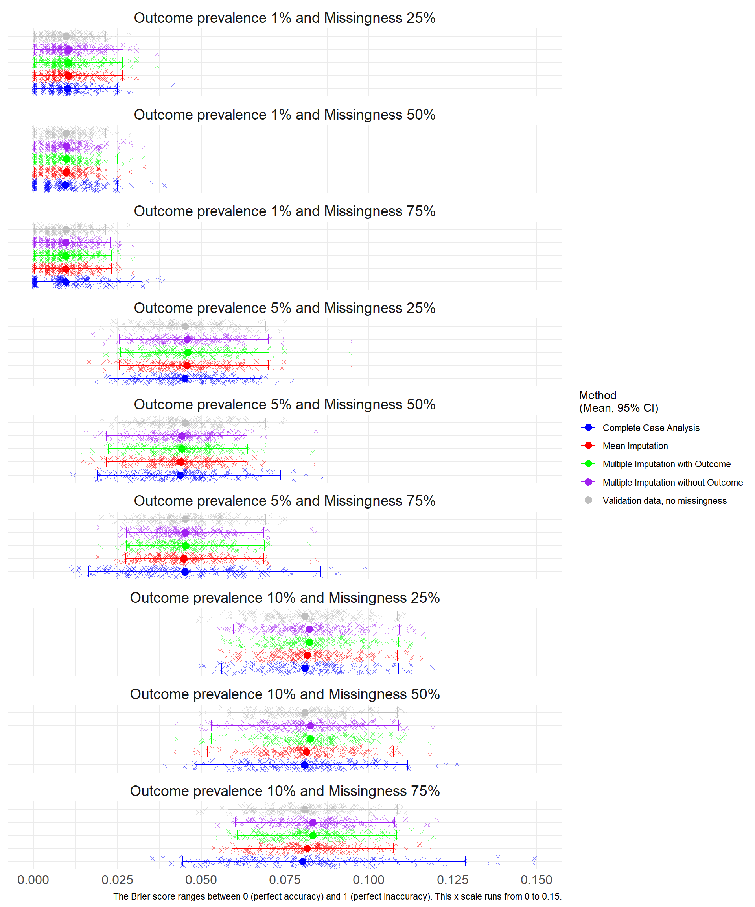
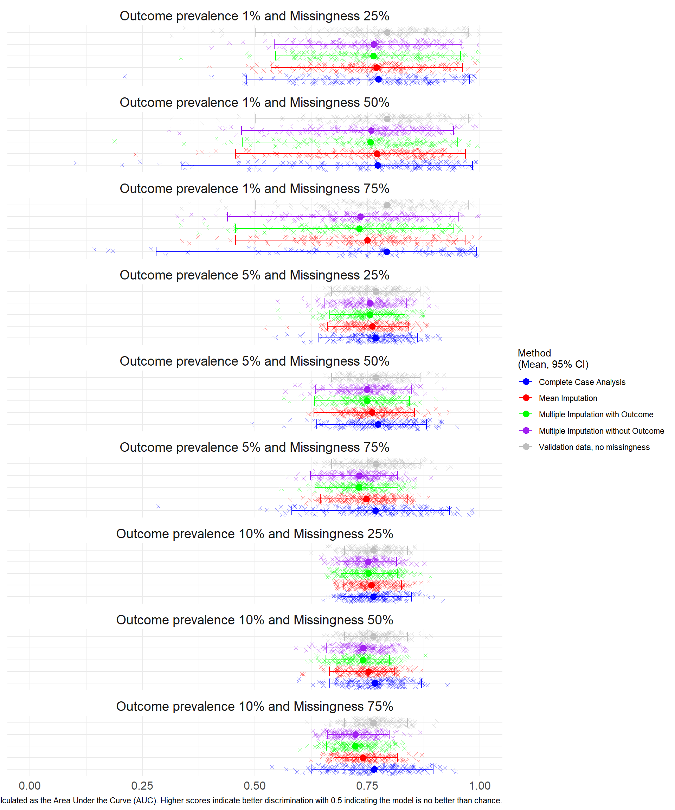
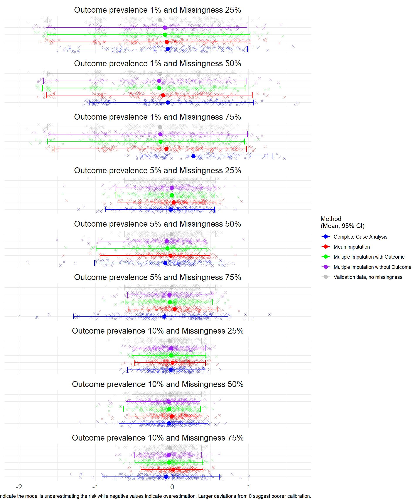
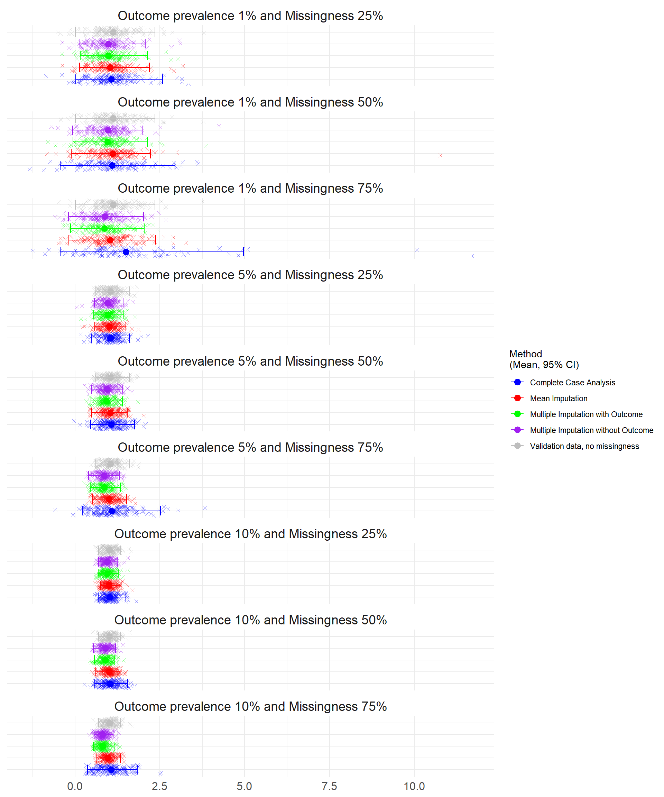
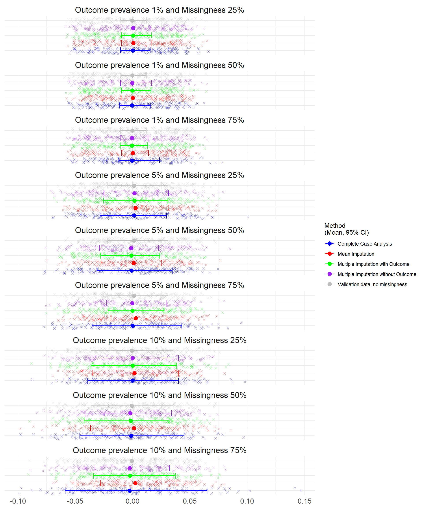
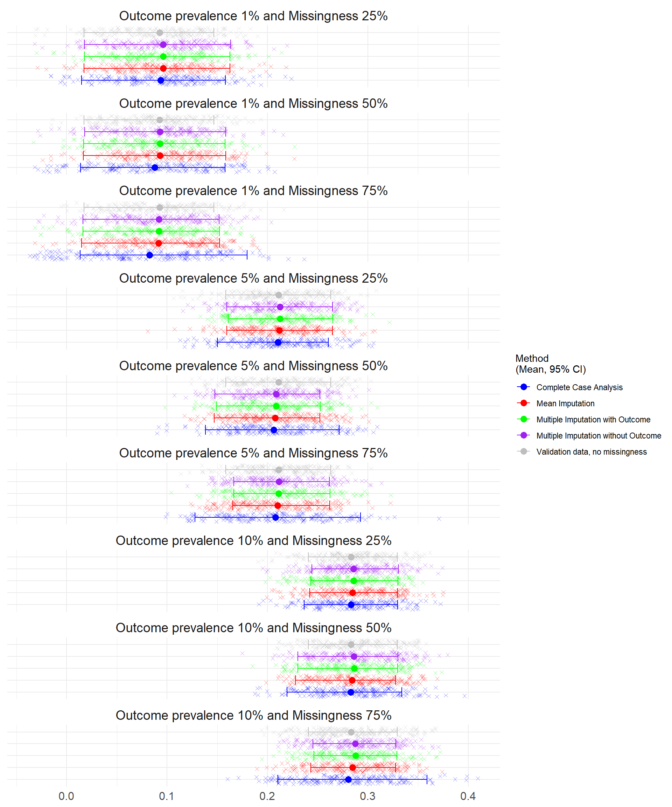

3 Results for MCAR N=500
3.1 Predictive Performance from Study 1 N=500 under Missing Completely at Random
At the smallest sample size, n=500. There were convergence issues where the outcome prevalence was lower (1% and 5%) and where Complete Case Analysis was used to handle the missing data as the sample size was reduced further. At missingness of 75%, almost half the simulations (46%) at 1% prevalence were unable to calculate the discrimination (AUC), calibration intercept and slope, Table 6.1.
3.1.1 Brier Score
There was no difference in performance of the imputation methods in any scenario. The lowest brier scores occurred at lower outcome prevalence.
3.1.2 Discrimination
There was very little difference observed between the scenarios. The highest range and confidence intervals were observed at 1% outcome prevalence and particularly when CCA was applied.
Warning: Removed 293 rows containing missing values or values outside the scale range
(`geom_point()`).
3.1.3 Calibration in the Large and Calibration Slope
The Calibration was assessed through Calibration in the Large (CATL) and the Calibration Slope.
The largest deviations from 0 and poorer calibration occurred at CCA at 75% missingness and 1% outcome prevalence. At prevalence 5% and 10%, the Calibration was very similar and close to zero.
Warning: Removed 265 rows containing missing values or values outside the scale range
(`geom_point()`).
The ideal value of the Calibration Slope is 1 indicating perfect calibration across all risk levels. Values less than 1 suggest overfitting (predictions are too extreme), while values greater than 1 suggest underfitting (predictions are too conservative). Values that differ significantly from 1 indicate poor calibration.
Warning: Removed 265 rows containing missing values or values outside the scale range
(`geom_point()`).
3.1.4 Bias
The Bias was assessed for each simulation (where 0 indicates no bias and the model estimates are on average equal to the true values).

3.1.5 Root Mean Square Error
The RMSE was assessed for each simulation where lower error indicates a better fit of the model. The lowest prevalence simulations (1%) had the lowest mean square error.

The average performance measures across 100 simulations are summarised in Table 6.1.
| Scenario | Method to handle missing data | Performance Measure | Average | Lower Confidence Interval | Upper Confidence Interval | Number of simulations that failed to converge |
|---|---|---|---|---|---|---|
| Outcome prevalence 10% and Missingness 75% | Complete Case Analysis | Calibration in the Large | -0.0803 | -0.9195 | 0.6210 | 0 |
| Outcome prevalence 10% and Missingness 75% | Complete Case Analysis | Calibration Slope | 1.0670 | 0.3734 | 1.8353 | 0 |
| Outcome prevalence 10% and Missingness 75% | Complete Case Analysis | AUC | 0.7652 | 0.6252 | 0.8959 | 0 |
| Outcome prevalence 10% and Missingness 75% | Complete Case Analysis | Brier Score | 0.0801 | 0.0444 | 0.1287 | 0 |
| Outcome prevalence 10% and Missingness 75% | Complete Case Analysis | Bias | -0.0026 | -0.0587 | 0.0650 | 0 |
| Outcome prevalence 10% and Missingness 75% | Complete Case Analysis | Mean Square Error | 0.0801 | 0.0444 | 0.1287 | 0 |
| Outcome prevalence 10% and Missingness 75% | Complete Case Analysis | Root Mean Square Error | 0.2805 | 0.2106 | 0.3588 | 0 |
| Outcome prevalence 10% and Missingness 75% | Multiple Imputation without Outcome | Calibration in the Large | -0.0453 | -0.4947 | 0.3864 | 0 |
| Outcome prevalence 10% and Missingness 75% | Multiple Imputation without Outcome | Calibration Slope | 0.8208 | 0.5691 | 1.1260 | 0 |
| Outcome prevalence 10% and Missingness 75% | Multiple Imputation without Outcome | AUC | 0.7234 | 0.6608 | 0.7989 | 0 |
| Outcome prevalence 10% and Missingness 75% | Multiple Imputation without Outcome | Brier Score | 0.0832 | 0.0602 | 0.1076 | 0 |
| Outcome prevalence 10% and Missingness 75% | Multiple Imputation without Outcome | Bias | -0.0026 | -0.0328 | 0.0321 | 0 |
| Outcome prevalence 10% and Missingness 75% | Multiple Imputation without Outcome | Mean Square Error | 0.0832 | 0.0602 | 0.1076 | 0 |
| Outcome prevalence 10% and Missingness 75% | Multiple Imputation without Outcome | Root Mean Square Error | 0.2876 | 0.2453 | 0.3280 | 0 |
| Outcome prevalence 10% and Missingness 75% | Multiple Imputation with Outcome | Calibration in the Large | -0.0412 | -0.4853 | 0.3986 | 0 |
| Outcome prevalence 10% and Missingness 75% | Multiple Imputation with Outcome | Calibration Slope | 0.8166 | 0.5445 | 1.1562 | 0 |
| Outcome prevalence 10% and Missingness 75% | Multiple Imputation with Outcome | AUC | 0.7226 | 0.6596 | 0.8021 | 0 |
| Outcome prevalence 10% and Missingness 75% | Multiple Imputation with Outcome | Brier Score | 0.0832 | 0.0607 | 0.1082 | 0 |
| Outcome prevalence 10% and Missingness 75% | Multiple Imputation with Outcome | Bias | -0.0022 | -0.0340 | 0.0373 | 0 |
| Outcome prevalence 10% and Missingness 75% | Multiple Imputation with Outcome | Mean Square Error | 0.0832 | 0.0607 | 0.1082 | 0 |
| Outcome prevalence 10% and Missingness 75% | Multiple Imputation with Outcome | Root Mean Square Error | 0.2877 | 0.2463 | 0.3290 | 0 |
| Outcome prevalence 10% and Missingness 75% | Mean Imputation | Calibration in the Large | 0.0139 | -0.4065 | 0.4062 | 0 |
| Outcome prevalence 10% and Missingness 75% | Mean Imputation | Calibration Slope | 0.9672 | 0.6491 | 1.3443 | 0 |
| Outcome prevalence 10% and Missingness 75% | Mean Imputation | AUC | 0.7396 | 0.6758 | 0.8171 | 0 |
| Outcome prevalence 10% and Missingness 75% | Mean Imputation | Brier Score | 0.0816 | 0.0591 | 0.1072 | 0 |
| Outcome prevalence 10% and Missingness 75% | Mean Imputation | Bias | 0.0023 | -0.0278 | 0.0380 | 0 |
| Outcome prevalence 10% and Missingness 75% | Mean Imputation | Mean Square Error | 0.0816 | 0.0591 | 0.1072 | 0 |
| Outcome prevalence 10% and Missingness 75% | Mean Imputation | Root Mean Square Error | 0.2848 | 0.2432 | 0.3275 | 0 |
| Outcome prevalence 10% and Missingness 50% | Complete Case Analysis | Calibration in the Large | -0.0417 | -0.6962 | 0.4670 | 0 |
| Outcome prevalence 10% and Missingness 50% | Complete Case Analysis | Calibration Slope | 1.0374 | 0.5823 | 1.5513 | 0 |
| Outcome prevalence 10% and Missingness 50% | Complete Case Analysis | AUC | 0.7662 | 0.6666 | 0.8701 | 0 |
| Outcome prevalence 10% and Missingness 50% | Complete Case Analysis | Brier Score | 0.0808 | 0.0481 | 0.1115 | 0 |
| Outcome prevalence 10% and Missingness 50% | Complete Case Analysis | Bias | -0.0012 | -0.0460 | 0.0451 | 0 |
| Outcome prevalence 10% and Missingness 50% | Complete Case Analysis | Mean Square Error | 0.0808 | 0.0481 | 0.1115 | 0 |
| Outcome prevalence 10% and Missingness 50% | Complete Case Analysis | Root Mean Square Error | 0.2829 | 0.2193 | 0.3339 | 0 |
| Outcome prevalence 10% and Missingness 50% | Multiple Imputation without Outcome | Calibration in the Large | -0.0439 | -0.6033 | 0.3648 | 0 |
| Outcome prevalence 10% and Missingness 50% | Multiple Imputation without Outcome | Calibration Slope | 0.8974 | 0.5432 | 1.1942 | 0 |
| Outcome prevalence 10% and Missingness 50% | Multiple Imputation without Outcome | AUC | 0.7405 | 0.6590 | 0.8044 | 0 |
| Outcome prevalence 10% and Missingness 50% | Multiple Imputation without Outcome | Brier Score | 0.0824 | 0.0530 | 0.1089 | 0 |
| Outcome prevalence 10% and Missingness 50% | Multiple Imputation without Outcome | Bias | -0.0021 | -0.0414 | 0.0339 | 0 |
| Outcome prevalence 10% and Missingness 50% | Multiple Imputation without Outcome | Mean Square Error | 0.0824 | 0.0530 | 0.1089 | 0 |
| Outcome prevalence 10% and Missingness 50% | Multiple Imputation without Outcome | Root Mean Square Error | 0.2862 | 0.2302 | 0.3300 | 0 |
| Outcome prevalence 10% and Missingness 50% | Multiple Imputation with Outcome | Calibration in the Large | -0.0389 | -0.6363 | 0.3715 | 0 |
| Outcome prevalence 10% and Missingness 50% | Multiple Imputation with Outcome | Calibration Slope | 0.8922 | 0.5805 | 1.1783 | 0 |
| Outcome prevalence 10% and Missingness 50% | Multiple Imputation with Outcome | AUC | 0.7400 | 0.6576 | 0.7994 | 0 |
| Outcome prevalence 10% and Missingness 50% | Multiple Imputation with Outcome | Brier Score | 0.0825 | 0.0530 | 0.1086 | 0 |
| Outcome prevalence 10% and Missingness 50% | Multiple Imputation with Outcome | Bias | -0.0017 | -0.0422 | 0.0319 | 0 |
| Outcome prevalence 10% and Missingness 50% | Multiple Imputation with Outcome | Mean Square Error | 0.0825 | 0.0530 | 0.1086 | 0 |
| Outcome prevalence 10% and Missingness 50% | Multiple Imputation with Outcome | Root Mean Square Error | 0.2863 | 0.2302 | 0.3296 | 0 |
| Outcome prevalence 10% and Missingness 50% | Mean Imputation | Calibration in the Large | -0.0031 | -0.5653 | 0.4061 | 0 |
| Outcome prevalence 10% and Missingness 50% | Mean Imputation | Calibration Slope | 1.0041 | 0.6146 | 1.3295 | 0 |
| Outcome prevalence 10% and Missingness 50% | Mean Imputation | AUC | 0.7523 | 0.6656 | 0.8110 | 0 |
| Outcome prevalence 10% and Missingness 50% | Mean Imputation | Brier Score | 0.0813 | 0.0519 | 0.1073 | 0 |
| Outcome prevalence 10% and Missingness 50% | Mean Imputation | Bias | 0.0013 | -0.0366 | 0.0371 | 0 |
| Outcome prevalence 10% and Missingness 50% | Mean Imputation | Mean Square Error | 0.0813 | 0.0519 | 0.1073 | 0 |
| Outcome prevalence 10% and Missingness 50% | Mean Imputation | Root Mean Square Error | 0.2842 | 0.2277 | 0.3275 | 0 |
| Outcome prevalence 10% and Missingness 25% | Complete Case Analysis | Calibration in the Large | -0.0212 | -0.5830 | 0.4302 | 0 |
| Outcome prevalence 10% and Missingness 25% | Complete Case Analysis | Calibration Slope | 1.0199 | 0.6883 | 1.5065 | 0 |
| Outcome prevalence 10% and Missingness 25% | Complete Case Analysis | AUC | 0.7637 | 0.6913 | 0.8477 | 0 |
| Outcome prevalence 10% and Missingness 25% | Complete Case Analysis | Brier Score | 0.0809 | 0.0560 | 0.1088 | 0 |
| Outcome prevalence 10% and Missingness 25% | Complete Case Analysis | Bias | -0.0002 | -0.0392 | 0.0399 | 0 |
| Outcome prevalence 10% and Missingness 25% | Complete Case Analysis | Mean Square Error | 0.0809 | 0.0560 | 0.1088 | 0 |
| Outcome prevalence 10% and Missingness 25% | Complete Case Analysis | Root Mean Square Error | 0.2834 | 0.2366 | 0.3298 | 0 |
| Outcome prevalence 10% and Missingness 25% | Multiple Imputation without Outcome | Calibration in the Large | -0.0151 | -0.5127 | 0.4342 | 0 |
| Outcome prevalence 10% and Missingness 25% | Multiple Imputation without Outcome | Calibration Slope | 0.9507 | 0.7002 | 1.2507 | 0 |
| Outcome prevalence 10% and Missingness 25% | Multiple Imputation without Outcome | AUC | 0.7519 | 0.6891 | 0.8150 | 0 |
| Outcome prevalence 10% and Missingness 25% | Multiple Imputation without Outcome | Brier Score | 0.0821 | 0.0597 | 0.1090 | 0 |
| Outcome prevalence 10% and Missingness 25% | Multiple Imputation without Outcome | Bias | 0.0000 | -0.0353 | 0.0399 | 0 |
| Outcome prevalence 10% and Missingness 25% | Multiple Imputation without Outcome | Mean Square Error | 0.0821 | 0.0597 | 0.1090 | 0 |
| Outcome prevalence 10% and Missingness 25% | Multiple Imputation without Outcome | Root Mean Square Error | 0.2858 | 0.2443 | 0.3302 | 0 |
| Outcome prevalence 10% and Missingness 25% | Multiple Imputation with Outcome | Calibration in the Large | -0.0150 | -0.5258 | 0.4401 | 0 |
| Outcome prevalence 10% and Missingness 25% | Multiple Imputation with Outcome | Calibration Slope | 0.9541 | 0.6889 | 1.2787 | 0 |
| Outcome prevalence 10% and Missingness 25% | Multiple Imputation with Outcome | AUC | 0.7526 | 0.6912 | 0.8169 | 0 |
| Outcome prevalence 10% and Missingness 25% | Multiple Imputation with Outcome | Brier Score | 0.0821 | 0.0592 | 0.1089 | 0 |
| Outcome prevalence 10% and Missingness 25% | Multiple Imputation with Outcome | Bias | 0.0001 | -0.0363 | 0.0385 | 0 |
| Outcome prevalence 10% and Missingness 25% | Multiple Imputation with Outcome | Mean Square Error | 0.0821 | 0.0592 | 0.1089 | 0 |
| Outcome prevalence 10% and Missingness 25% | Multiple Imputation with Outcome | Root Mean Square Error | 0.2857 | 0.2433 | 0.3300 | 0 |
| Outcome prevalence 10% and Missingness 25% | Mean Imputation | Calibration in the Large | 0.0047 | -0.4955 | 0.4365 | 0 |
| Outcome prevalence 10% and Missingness 25% | Mean Imputation | Calibration Slope | 1.0073 | 0.7466 | 1.3628 | 0 |
| Outcome prevalence 10% and Missingness 25% | Mean Imputation | AUC | 0.7584 | 0.6958 | 0.8258 | 0 |
| Outcome prevalence 10% and Missingness 25% | Mean Imputation | Brier Score | 0.0816 | 0.0586 | 0.1086 | 0 |
| Outcome prevalence 10% and Missingness 25% | Mean Imputation | Bias | 0.0017 | -0.0346 | 0.0401 | 0 |
| Outcome prevalence 10% and Missingness 25% | Mean Imputation | Mean Square Error | 0.0816 | 0.0586 | 0.1086 | 0 |
| Outcome prevalence 10% and Missingness 25% | Mean Imputation | Root Mean Square Error | 0.2848 | 0.2421 | 0.3295 | 0 |
| Outcome prevalence 5% and Missingness 75% | Complete Case Analysis | Calibration in the Large | -0.1054 | -1.2878 | 0.7330 | 0 |
| Outcome prevalence 5% and Missingness 75% | Complete Case Analysis | Calibration Slope | 1.0835 | 0.2237 | 2.5267 | 0 |
| Outcome prevalence 5% and Missingness 75% | Complete Case Analysis | AUC | 0.7677 | 0.5818 | 0.9330 | 0 |
| Outcome prevalence 5% and Missingness 75% | Complete Case Analysis | Brier Score | 0.0451 | 0.0163 | 0.0857 | 0 |
| Outcome prevalence 5% and Missingness 75% | Complete Case Analysis | Bias | 0.0001 | -0.0353 | 0.0430 | 0 |
| Outcome prevalence 5% and Missingness 75% | Complete Case Analysis | Mean Square Error | 0.0451 | 0.0163 | 0.0857 | 0 |
| Outcome prevalence 5% and Missingness 75% | Complete Case Analysis | Root Mean Square Error | 0.2079 | 0.1279 | 0.2927 | 0 |
| Outcome prevalence 5% and Missingness 75% | Multiple Imputation without Outcome | Calibration in the Large | -0.0353 | -0.5836 | 0.5348 | 0 |
| Outcome prevalence 5% and Missingness 75% | Multiple Imputation without Outcome | Calibration Slope | 0.8597 | 0.4070 | 1.3048 | 0 |
| Outcome prevalence 5% and Missingness 75% | Multiple Imputation without Outcome | AUC | 0.7320 | 0.6232 | 0.8171 | 0 |
| Outcome prevalence 5% and Missingness 75% | Multiple Imputation without Outcome | Brier Score | 0.0453 | 0.0277 | 0.0685 | 0 |
| Outcome prevalence 5% and Missingness 75% | Multiple Imputation without Outcome | Bias | -0.0003 | -0.0227 | 0.0298 | 0 |
| Outcome prevalence 5% and Missingness 75% | Multiple Imputation without Outcome | Mean Square Error | 0.0453 | 0.0277 | 0.0685 | 0 |
| Outcome prevalence 5% and Missingness 75% | Multiple Imputation without Outcome | Root Mean Square Error | 0.2113 | 0.1664 | 0.2617 | 0 |
| Outcome prevalence 5% and Missingness 75% | Multiple Imputation with Outcome | Calibration in the Large | -0.0314 | -0.6136 | 0.5278 | 0 |
| Outcome prevalence 5% and Missingness 75% | Multiple Imputation with Outcome | Calibration Slope | 0.8573 | 0.4581 | 1.3441 | 0 |
| Outcome prevalence 5% and Missingness 75% | Multiple Imputation with Outcome | AUC | 0.7313 | 0.6335 | 0.8184 | 0 |
| Outcome prevalence 5% and Missingness 75% | Multiple Imputation with Outcome | Brier Score | 0.0452 | 0.0278 | 0.0689 | 0 |
| Outcome prevalence 5% and Missingness 75% | Multiple Imputation with Outcome | Bias | -0.0001 | -0.0213 | 0.0274 | 0 |
| Outcome prevalence 5% and Missingness 75% | Multiple Imputation with Outcome | Mean Square Error | 0.0452 | 0.0278 | 0.0689 | 0 |
| Outcome prevalence 5% and Missingness 75% | Multiple Imputation with Outcome | Root Mean Square Error | 0.2113 | 0.1667 | 0.2625 | 0 |
| Outcome prevalence 5% and Missingness 75% | Mean Imputation | Calibration in the Large | 0.0317 | -0.5728 | 0.5894 | 0 |
| Outcome prevalence 5% and Missingness 75% | Mean Imputation | Calibration Slope | 1.0078 | 0.5238 | 1.5264 | 0 |
| Outcome prevalence 5% and Missingness 75% | Mean Imputation | AUC | 0.7480 | 0.6449 | 0.8402 | 0 |
| Outcome prevalence 5% and Missingness 75% | Mean Imputation | Brier Score | 0.0447 | 0.0274 | 0.0686 | 0 |
| Outcome prevalence 5% and Missingness 75% | Mean Imputation | Bias | 0.0027 | -0.0187 | 0.0301 | 0 |
| Outcome prevalence 5% and Missingness 75% | Mean Imputation | Mean Square Error | 0.0447 | 0.0274 | 0.0686 | 0 |
| Outcome prevalence 5% and Missingness 75% | Mean Imputation | Root Mean Square Error | 0.2100 | 0.1654 | 0.2619 | 0 |
| Outcome prevalence 5% and Missingness 50% | Complete Case Analysis | Calibration in the Large | -0.0898 | -1.0156 | 0.6530 | 0 |
| Outcome prevalence 5% and Missingness 50% | Complete Case Analysis | Calibration Slope | 1.0787 | 0.4644 | 1.7571 | 0 |
| Outcome prevalence 5% and Missingness 50% | Complete Case Analysis | AUC | 0.7736 | 0.6375 | 0.8811 | 0 |
| Outcome prevalence 5% and Missingness 50% | Complete Case Analysis | Brier Score | 0.0437 | 0.0191 | 0.0736 | 0 |
| Outcome prevalence 5% and Missingness 50% | Complete Case Analysis | Bias | -0.0009 | -0.0311 | 0.0346 | 0 |
| Outcome prevalence 5% and Missingness 50% | Complete Case Analysis | Mean Square Error | 0.0437 | 0.0191 | 0.0736 | 0 |
| Outcome prevalence 5% and Missingness 50% | Complete Case Analysis | Root Mean Square Error | 0.2063 | 0.1382 | 0.2713 | 0 |
| Outcome prevalence 5% and Missingness 50% | Multiple Imputation without Outcome | Calibration in the Large | -0.0686 | -0.9591 | 0.4304 | 0 |
| Outcome prevalence 5% and Missingness 50% | Multiple Imputation without Outcome | Calibration Slope | 0.9382 | 0.4976 | 1.4092 | 0 |
| Outcome prevalence 5% and Missingness 50% | Multiple Imputation without Outcome | AUC | 0.7493 | 0.6354 | 0.8474 | 0 |
| Outcome prevalence 5% and Missingness 50% | Multiple Imputation without Outcome | Brier Score | 0.0442 | 0.0218 | 0.0636 | 0 |
| Outcome prevalence 5% and Missingness 50% | Multiple Imputation without Outcome | Bias | -0.0013 | -0.0289 | 0.0228 | 0 |
| Outcome prevalence 5% and Missingness 50% | Multiple Imputation without Outcome | Mean Square Error | 0.0442 | 0.0218 | 0.0636 | 0 |
| Outcome prevalence 5% and Missingness 50% | Multiple Imputation without Outcome | Root Mean Square Error | 0.2086 | 0.1476 | 0.2522 | 0 |
| Outcome prevalence 5% and Missingness 50% | Multiple Imputation with Outcome | Calibration in the Large | -0.0639 | -0.9938 | 0.4557 | 0 |
| Outcome prevalence 5% and Missingness 50% | Multiple Imputation with Outcome | Calibration Slope | 0.9358 | 0.4716 | 1.3987 | 0 |
| Outcome prevalence 5% and Missingness 50% | Multiple Imputation with Outcome | AUC | 0.7494 | 0.6318 | 0.8441 | 0 |
| Outcome prevalence 5% and Missingness 50% | Multiple Imputation with Outcome | Brier Score | 0.0442 | 0.0223 | 0.0639 | 0 |
| Outcome prevalence 5% and Missingness 50% | Multiple Imputation with Outcome | Bias | -0.0011 | -0.0277 | 0.0237 | 0 |
| Outcome prevalence 5% and Missingness 50% | Multiple Imputation with Outcome | Mean Square Error | 0.0442 | 0.0223 | 0.0639 | 0 |
| Outcome prevalence 5% and Missingness 50% | Multiple Imputation with Outcome | Root Mean Square Error | 0.2086 | 0.1493 | 0.2527 | 0 |
| Outcome prevalence 5% and Missingness 50% | Mean Imputation | Calibration in the Large | -0.0224 | -0.9407 | 0.4942 | 0 |
| Outcome prevalence 5% and Missingness 50% | Mean Imputation | Calibration Slope | 1.0447 | 0.4908 | 1.5436 | 0 |
| Outcome prevalence 5% and Missingness 50% | Mean Imputation | AUC | 0.7606 | 0.6312 | 0.8549 | 0 |
| Outcome prevalence 5% and Missingness 50% | Mean Imputation | Brier Score | 0.0438 | 0.0217 | 0.0637 | 0 |
| Outcome prevalence 5% and Missingness 50% | Mean Imputation | Bias | 0.0008 | -0.0273 | 0.0255 | 0 |
| Outcome prevalence 5% and Missingness 50% | Mean Imputation | Mean Square Error | 0.0438 | 0.0217 | 0.0637 | 0 |
| Outcome prevalence 5% and Missingness 50% | Mean Imputation | Root Mean Square Error | 0.2076 | 0.1472 | 0.2523 | 0 |
| Outcome prevalence 5% and Missingness 25% | Complete Case Analysis | Calibration in the Large | -0.0174 | -0.8729 | 0.5546 | 0 |
| Outcome prevalence 5% and Missingness 25% | Complete Case Analysis | Calibration Slope | 1.0401 | 0.4877 | 1.6056 | 0 |
| Outcome prevalence 5% and Missingness 25% | Complete Case Analysis | AUC | 0.7679 | 0.6426 | 0.8608 | 0 |
| Outcome prevalence 5% and Missingness 25% | Complete Case Analysis | Brier Score | 0.0451 | 0.0225 | 0.0678 | 0 |
| Outcome prevalence 5% and Missingness 25% | Complete Case Analysis | Bias | 0.0013 | -0.0284 | 0.0297 | 0 |
| Outcome prevalence 5% and Missingness 25% | Complete Case Analysis | Mean Square Error | 0.0451 | 0.0225 | 0.0678 | 0 |
| Outcome prevalence 5% and Missingness 25% | Complete Case Analysis | Root Mean Square Error | 0.2105 | 0.1500 | 0.2605 | 0 |
| Outcome prevalence 5% and Missingness 25% | Multiple Imputation without Outcome | Calibration in the Large | -0.0047 | -0.7365 | 0.5729 | 0 |
| Outcome prevalence 5% and Missingness 25% | Multiple Imputation without Outcome | Calibration Slope | 0.9670 | 0.5734 | 1.4194 | 0 |
| Outcome prevalence 5% and Missingness 25% | Multiple Imputation without Outcome | AUC | 0.7554 | 0.6558 | 0.8373 | 0 |
| Outcome prevalence 5% and Missingness 25% | Multiple Imputation without Outcome | Brier Score | 0.0458 | 0.0255 | 0.0701 | 0 |
| Outcome prevalence 5% and Missingness 25% | Multiple Imputation without Outcome | Bias | 0.0016 | -0.0250 | 0.0314 | 0 |
| Outcome prevalence 5% and Missingness 25% | Multiple Imputation without Outcome | Mean Square Error | 0.0458 | 0.0255 | 0.0701 | 0 |
| Outcome prevalence 5% and Missingness 25% | Multiple Imputation without Outcome | Root Mean Square Error | 0.2124 | 0.1596 | 0.2647 | 0 |
| Outcome prevalence 5% and Missingness 25% | Multiple Imputation with Outcome | Calibration in the Large | -0.0045 | -0.7443 | 0.5601 | 0 |
| Outcome prevalence 5% and Missingness 25% | Multiple Imputation with Outcome | Calibration Slope | 0.9665 | 0.5599 | 1.4457 | 0 |
| Outcome prevalence 5% and Missingness 25% | Multiple Imputation with Outcome | AUC | 0.7556 | 0.6661 | 0.8340 | 0 |
| Outcome prevalence 5% and Missingness 25% | Multiple Imputation with Outcome | Brier Score | 0.0459 | 0.0259 | 0.0702 | 0 |
| Outcome prevalence 5% and Missingness 25% | Multiple Imputation with Outcome | Bias | 0.0016 | -0.0253 | 0.0308 | 0 |
| Outcome prevalence 5% and Missingness 25% | Multiple Imputation with Outcome | Mean Square Error | 0.0459 | 0.0259 | 0.0702 | 0 |
| Outcome prevalence 5% and Missingness 25% | Multiple Imputation with Outcome | Root Mean Square Error | 0.2125 | 0.1608 | 0.2650 | 0 |
| Outcome prevalence 5% and Missingness 25% | Mean Imputation | Calibration in the Large | 0.0178 | -0.7212 | 0.5735 | 0 |
| Outcome prevalence 5% and Missingness 25% | Mean Imputation | Calibration Slope | 1.0185 | 0.5870 | 1.5003 | 0 |
| Outcome prevalence 5% and Missingness 25% | Mean Imputation | AUC | 0.7611 | 0.6611 | 0.8406 | 0 |
| Outcome prevalence 5% and Missingness 25% | Mean Imputation | Brier Score | 0.0457 | 0.0255 | 0.0701 | 0 |
| Outcome prevalence 5% and Missingness 25% | Mean Imputation | Bias | 0.0026 | -0.0240 | 0.0315 | 0 |
| Outcome prevalence 5% and Missingness 25% | Mean Imputation | Mean Square Error | 0.0457 | 0.0255 | 0.0701 | 0 |
| Outcome prevalence 5% and Missingness 25% | Mean Imputation | Root Mean Square Error | 0.2120 | 0.1596 | 0.2648 | 0 |
| Outcome prevalence 1% and Missingness 75% | Complete Case Analysis | Calibration in the Large | 0.2761 | -0.4334 | 1.3161 | 76 |
| Outcome prevalence 1% and Missingness 75% | Complete Case Analysis | Calibration Slope | 1.4980 | -0.4341 | 4.9682 | 76 |
| Outcome prevalence 1% and Missingness 75% | Complete Case Analysis | AUC | 0.7929 | 0.2804 | 0.9929 | 75 |
| Outcome prevalence 1% and Missingness 75% | Complete Case Analysis | Brier Score | 0.0096 | 0.0002 | 0.0323 | 0 |
| Outcome prevalence 1% and Missingness 75% | Complete Case Analysis | Bias | -0.0004 | -0.0121 | 0.0235 | 0 |
| Outcome prevalence 1% and Missingness 75% | Complete Case Analysis | Mean Square Error | 0.0096 | 0.0002 | 0.0323 | 0 |
| Outcome prevalence 1% and Missingness 75% | Complete Case Analysis | Root Mean Square Error | 0.0825 | 0.0134 | 0.1798 | 0 |
| Outcome prevalence 1% and Missingness 75% | Multiple Imputation without Outcome | Calibration in the Large | -0.1556 | -1.6114 | 0.9869 | 13 |
| Outcome prevalence 1% and Missingness 75% | Multiple Imputation without Outcome | Calibration Slope | 0.8858 | -0.1909 | 2.0244 | 13 |
| Outcome prevalence 1% and Missingness 75% | Multiple Imputation without Outcome | AUC | 0.7340 | 0.4387 | 0.9533 | 13 |
| Outcome prevalence 1% and Missingness 75% | Multiple Imputation without Outcome | Brier Score | 0.0096 | 0.0003 | 0.0231 | 0 |
| Outcome prevalence 1% and Missingness 75% | Multiple Imputation without Outcome | Bias | -0.0005 | -0.0103 | 0.0135 | 0 |
| Outcome prevalence 1% and Missingness 75% | Multiple Imputation without Outcome | Mean Square Error | 0.0096 | 0.0003 | 0.0231 | 0 |
| Outcome prevalence 1% and Missingness 75% | Multiple Imputation without Outcome | Root Mean Square Error | 0.0919 | 0.0162 | 0.1519 | 0 |
| Outcome prevalence 1% and Missingness 75% | Multiple Imputation with Outcome | Calibration in the Large | -0.1535 | -1.6295 | 0.9473 | 13 |
| Outcome prevalence 1% and Missingness 75% | Multiple Imputation with Outcome | Calibration Slope | 0.8703 | -0.1283 | 2.0473 | 13 |
| Outcome prevalence 1% and Missingness 75% | Multiple Imputation with Outcome | AUC | 0.7317 | 0.4572 | 0.9426 | 13 |
| Outcome prevalence 1% and Missingness 75% | Multiple Imputation with Outcome | Brier Score | 0.0096 | 0.0003 | 0.0232 | 0 |
| Outcome prevalence 1% and Missingness 75% | Multiple Imputation with Outcome | Bias | -0.0004 | -0.0106 | 0.0132 | 0 |
| Outcome prevalence 1% and Missingness 75% | Multiple Imputation with Outcome | Mean Square Error | 0.0096 | 0.0003 | 0.0232 | 0 |
| Outcome prevalence 1% and Missingness 75% | Multiple Imputation with Outcome | Root Mean Square Error | 0.0919 | 0.0162 | 0.1524 | 0 |
| Outcome prevalence 1% and Missingness 75% | Mean Imputation | Calibration in the Large | -0.0755 | -1.5432 | 0.9708 | 13 |
| Outcome prevalence 1% and Missingness 75% | Mean Imputation | Calibration Slope | 1.0322 | -0.1753 | 2.3833 | 13 |
| Outcome prevalence 1% and Missingness 75% | Mean Imputation | AUC | 0.7499 | 0.4566 | 0.9677 | 13 |
| Outcome prevalence 1% and Missingness 75% | Mean Imputation | Brier Score | 0.0095 | 0.0002 | 0.0231 | 0 |
| Outcome prevalence 1% and Missingness 75% | Mean Imputation | Bias | 0.0003 | -0.0096 | 0.0140 | 0 |
| Outcome prevalence 1% and Missingness 75% | Mean Imputation | Mean Square Error | 0.0095 | 0.0002 | 0.0231 | 0 |
| Outcome prevalence 1% and Missingness 75% | Mean Imputation | Root Mean Square Error | 0.0915 | 0.0148 | 0.1521 | 0 |
| Outcome prevalence 1% and Missingness 50% | Complete Case Analysis | Calibration in the Large | -0.0564 | -1.0765 | 1.0656 | 35 |
| Outcome prevalence 1% and Missingness 50% | Complete Case Analysis | Calibration Slope | 1.1000 | -0.4332 | 2.9540 | 35 |
| Outcome prevalence 1% and Missingness 50% | Complete Case Analysis | AUC | 0.7725 | 0.3358 | 0.9834 | 34 |
| Outcome prevalence 1% and Missingness 50% | Complete Case Analysis | Brier Score | 0.0095 | 0.0002 | 0.0249 | 0 |
| Outcome prevalence 1% and Missingness 50% | Complete Case Analysis | Bias | -0.0005 | -0.0112 | 0.0158 | 0 |
| Outcome prevalence 1% and Missingness 50% | Complete Case Analysis | Mean Square Error | 0.0095 | 0.0002 | 0.0249 | 0 |
| Outcome prevalence 1% and Missingness 50% | Complete Case Analysis | Root Mean Square Error | 0.0878 | 0.0140 | 0.1578 | 0 |
| Outcome prevalence 1% and Missingness 50% | Multiple Imputation without Outcome | Calibration in the Large | -0.1727 | -1.6804 | 0.9699 | 10 |
| Outcome prevalence 1% and Missingness 50% | Multiple Imputation without Outcome | Calibration Slope | 0.9749 | -0.0629 | 1.9998 | 10 |
| Outcome prevalence 1% and Missingness 50% | Multiple Imputation without Outcome | AUC | 0.7584 | 0.4706 | 0.9415 | 10 |
| Outcome prevalence 1% and Missingness 50% | Multiple Imputation without Outcome | Brier Score | 0.0098 | 0.0003 | 0.0251 | 0 |
| Outcome prevalence 1% and Missingness 50% | Multiple Imputation without Outcome | Bias | -0.0003 | -0.0105 | 0.0165 | 0 |
| Outcome prevalence 1% and Missingness 50% | Multiple Imputation without Outcome | Mean Square Error | 0.0098 | 0.0003 | 0.0251 | 0 |
| Outcome prevalence 1% and Missingness 50% | Multiple Imputation without Outcome | Root Mean Square Error | 0.0931 | 0.0179 | 0.1585 | 0 |
| Outcome prevalence 1% and Missingness 50% | Multiple Imputation with Outcome | Calibration in the Large | -0.1709 | -1.6968 | 0.9554 | 10 |
| Outcome prevalence 1% and Missingness 50% | Multiple Imputation with Outcome | Calibration Slope | 0.9677 | -0.0602 | 2.1411 | 10 |
| Outcome prevalence 1% and Missingness 50% | Multiple Imputation with Outcome | AUC | 0.7568 | 0.4721 | 0.9506 | 10 |
| Outcome prevalence 1% and Missingness 50% | Multiple Imputation with Outcome | Brier Score | 0.0098 | 0.0003 | 0.0250 | 0 |
| Outcome prevalence 1% and Missingness 50% | Multiple Imputation with Outcome | Bias | -0.0003 | -0.0097 | 0.0161 | 0 |
| Outcome prevalence 1% and Missingness 50% | Multiple Imputation with Outcome | Mean Square Error | 0.0098 | 0.0003 | 0.0250 | 0 |
| Outcome prevalence 1% and Missingness 50% | Multiple Imputation with Outcome | Root Mean Square Error | 0.0930 | 0.0169 | 0.1580 | 0 |
| Outcome prevalence 1% and Missingness 50% | Mean Imputation | Calibration in the Large | -0.1177 | -1.6455 | 1.0489 | 10 |
| Outcome prevalence 1% and Missingness 50% | Mean Imputation | Calibration Slope | 1.1202 | -0.1104 | 2.2237 | 10 |
| Outcome prevalence 1% and Missingness 50% | Mean Imputation | AUC | 0.7713 | 0.4573 | 0.9678 | 10 |
| Outcome prevalence 1% and Missingness 50% | Mean Imputation | Brier Score | 0.0097 | 0.0003 | 0.0251 | 0 |
| Outcome prevalence 1% and Missingness 50% | Mean Imputation | Bias | 0.0002 | -0.0100 | 0.0170 | 0 |
| Outcome prevalence 1% and Missingness 50% | Mean Imputation | Mean Square Error | 0.0097 | 0.0003 | 0.0251 | 0 |
| Outcome prevalence 1% and Missingness 50% | Mean Imputation | Root Mean Square Error | 0.0928 | 0.0167 | 0.1585 | 0 |
| Outcome prevalence 1% and Missingness 25% | Complete Case Analysis | Calibration in the Large | -0.0595 | -1.3776 | 0.9850 | 19 |
| Outcome prevalence 1% and Missingness 25% | Complete Case Analysis | Calibration Slope | 1.0778 | 0.0253 | 2.5825 | 19 |
| Outcome prevalence 1% and Missingness 25% | Complete Case Analysis | AUC | 0.7746 | 0.4816 | 0.9767 | 19 |
| Outcome prevalence 1% and Missingness 25% | Complete Case Analysis | Brier Score | 0.0101 | 0.0002 | 0.0250 | 0 |
| Outcome prevalence 1% and Missingness 25% | Complete Case Analysis | Bias | 0.0002 | -0.0104 | 0.0155 | 0 |
| Outcome prevalence 1% and Missingness 25% | Complete Case Analysis | Mean Square Error | 0.0101 | 0.0002 | 0.0250 | 0 |
| Outcome prevalence 1% and Missingness 25% | Complete Case Analysis | Root Mean Square Error | 0.0935 | 0.0150 | 0.1582 | 0 |
| Outcome prevalence 1% and Missingness 25% | Multiple Imputation without Outcome | Calibration in the Large | -0.0953 | -1.6503 | 0.9765 | 10 |
| Outcome prevalence 1% and Missingness 25% | Multiple Imputation without Outcome | Calibration Slope | 0.9835 | 0.1476 | 2.0751 | 10 |
| Outcome prevalence 1% and Missingness 25% | Multiple Imputation without Outcome | AUC | 0.7638 | 0.5432 | 0.9607 | 9 |
| Outcome prevalence 1% and Missingness 25% | Multiple Imputation without Outcome | Brier Score | 0.0104 | 0.0003 | 0.0267 | 0 |
| Outcome prevalence 1% and Missingness 25% | Multiple Imputation without Outcome | Bias | 0.0004 | -0.0100 | 0.0160 | 0 |
| Outcome prevalence 1% and Missingness 25% | Multiple Imputation without Outcome | Mean Square Error | 0.0104 | 0.0003 | 0.0267 | 0 |
| Outcome prevalence 1% and Missingness 25% | Multiple Imputation without Outcome | Root Mean Square Error | 0.0961 | 0.0177 | 0.1632 | 0 |
| Outcome prevalence 1% and Missingness 25% | Multiple Imputation with Outcome | Calibration in the Large | -0.0953 | -1.6348 | 1.0204 | 10 |
| Outcome prevalence 1% and Missingness 25% | Multiple Imputation with Outcome | Calibration Slope | 0.9849 | 0.1594 | 2.1451 | 10 |
| Outcome prevalence 1% and Missingness 25% | Multiple Imputation with Outcome | AUC | 0.7633 | 0.5464 | 0.9575 | 10 |
| Outcome prevalence 1% and Missingness 25% | Multiple Imputation with Outcome | Brier Score | 0.0104 | 0.0003 | 0.0265 | 0 |
| Outcome prevalence 1% and Missingness 25% | Multiple Imputation with Outcome | Bias | 0.0004 | -0.0097 | 0.0166 | 0 |
| Outcome prevalence 1% and Missingness 25% | Multiple Imputation with Outcome | Mean Square Error | 0.0104 | 0.0003 | 0.0265 | 0 |
| Outcome prevalence 1% and Missingness 25% | Multiple Imputation with Outcome | Root Mean Square Error | 0.0961 | 0.0177 | 0.1628 | 0 |
| Outcome prevalence 1% and Missingness 25% | Mean Imputation | Calibration in the Large | -0.0686 | -1.6117 | 1.0201 | 10 |
| Outcome prevalence 1% and Missingness 25% | Mean Imputation | Calibration Slope | 1.0381 | 0.1354 | 2.1988 | 10 |
| Outcome prevalence 1% and Missingness 25% | Mean Imputation | AUC | 0.7702 | 0.5360 | 0.9610 | 10 |
| Outcome prevalence 1% and Missingness 25% | Mean Imputation | Brier Score | 0.0104 | 0.0003 | 0.0265 | 0 |
| Outcome prevalence 1% and Missingness 25% | Mean Imputation | Bias | 0.0007 | -0.0095 | 0.0169 | 0 |
| Outcome prevalence 1% and Missingness 25% | Mean Imputation | Mean Square Error | 0.0104 | 0.0003 | 0.0265 | 0 |
| Outcome prevalence 1% and Missingness 25% | Mean Imputation | Root Mean Square Error | 0.0960 | 0.0174 | 0.1628 | 0 |
| Outcome prevalence 10% and Missingness 75% | Validation data, no missingness | Calibration in the Large | -0.0270 | -0.5229 | 0.3814 | 0 |
| Outcome prevalence 10% and Missingness 75% | Validation data, no missingness | Calibration Slope | 1.0098 | 0.6931 | 1.3460 | 0 |
| Outcome prevalence 10% and Missingness 75% | Validation data, no missingness | AUC | 0.7632 | 0.6994 | 0.8389 | 0 |
| Outcome prevalence 10% and Missingness 75% | Validation data, no missingness | Brier Score | 0.0808 | 0.0580 | 0.1084 | 0 |
| Outcome prevalence 10% and Missingness 75% | Validation data, no missingness | Bias | -0.0007 | -0.0361 | 0.0354 | 0 |
| Outcome prevalence 10% and Missingness 75% | Validation data, no missingness | Mean Square Error | 0.0808 | 0.0580 | 0.1084 | 0 |
| Outcome prevalence 10% and Missingness 75% | Validation data, no missingness | Root Mean Square Error | 0.2834 | 0.2408 | 0.3292 | 0 |
| Outcome prevalence 10% and Missingness 50% | Validation data, no missingness | Calibration in the Large | -0.0270 | -0.5229 | 0.3814 | 0 |
| Outcome prevalence 10% and Missingness 50% | Validation data, no missingness | Calibration Slope | 1.0098 | 0.6931 | 1.3460 | 0 |
| Outcome prevalence 10% and Missingness 50% | Validation data, no missingness | AUC | 0.7632 | 0.6994 | 0.8389 | 0 |
| Outcome prevalence 10% and Missingness 50% | Validation data, no missingness | Brier Score | 0.0808 | 0.0580 | 0.1084 | 0 |
| Outcome prevalence 10% and Missingness 50% | Validation data, no missingness | Bias | -0.0007 | -0.0361 | 0.0354 | 0 |
| Outcome prevalence 10% and Missingness 50% | Validation data, no missingness | Mean Square Error | 0.0808 | 0.0580 | 0.1084 | 0 |
| Outcome prevalence 10% and Missingness 50% | Validation data, no missingness | Root Mean Square Error | 0.2834 | 0.2408 | 0.3292 | 0 |
| Outcome prevalence 10% and Missingness 25% | Validation data, no missingness | Calibration in the Large | -0.0270 | -0.5229 | 0.3814 | 0 |
| Outcome prevalence 10% and Missingness 25% | Validation data, no missingness | Calibration Slope | 1.0098 | 0.6931 | 1.3460 | 0 |
| Outcome prevalence 10% and Missingness 25% | Validation data, no missingness | AUC | 0.7632 | 0.6994 | 0.8389 | 0 |
| Outcome prevalence 10% and Missingness 25% | Validation data, no missingness | Brier Score | 0.0808 | 0.0580 | 0.1084 | 0 |
| Outcome prevalence 10% and Missingness 25% | Validation data, no missingness | Bias | -0.0007 | -0.0361 | 0.0354 | 0 |
| Outcome prevalence 10% and Missingness 25% | Validation data, no missingness | Mean Square Error | 0.0808 | 0.0580 | 0.1084 | 0 |
| Outcome prevalence 10% and Missingness 25% | Validation data, no missingness | Root Mean Square Error | 0.2834 | 0.2408 | 0.3292 | 0 |
| Outcome prevalence 5% and Missingness 75% | Validation data, no missingness | Calibration in the Large | -0.0106 | -0.6252 | 0.5641 | 0 |
| Outcome prevalence 5% and Missingness 75% | Validation data, no missingness | Calibration Slope | 1.0408 | 0.6181 | 1.6123 | 0 |
| Outcome prevalence 5% and Missingness 75% | Validation data, no missingness | AUC | 0.7691 | 0.6705 | 0.8670 | 0 |
| Outcome prevalence 5% and Missingness 75% | Validation data, no missingness | Brier Score | 0.0452 | 0.0251 | 0.0692 | 0 |
| Outcome prevalence 5% and Missingness 75% | Validation data, no missingness | Bias | 0.0012 | -0.0215 | 0.0311 | 0 |
| Outcome prevalence 5% and Missingness 75% | Validation data, no missingness | Mean Square Error | 0.0452 | 0.0251 | 0.0692 | 0 |
| Outcome prevalence 5% and Missingness 75% | Validation data, no missingness | Root Mean Square Error | 0.2111 | 0.1585 | 0.2630 | 0 |
| Outcome prevalence 5% and Missingness 50% | Validation data, no missingness | Calibration in the Large | -0.0106 | -0.6252 | 0.5641 | 0 |
| Outcome prevalence 5% and Missingness 50% | Validation data, no missingness | Calibration Slope | 1.0408 | 0.6181 | 1.6123 | 0 |
| Outcome prevalence 5% and Missingness 50% | Validation data, no missingness | AUC | 0.7691 | 0.6705 | 0.8670 | 0 |
| Outcome prevalence 5% and Missingness 50% | Validation data, no missingness | Brier Score | 0.0452 | 0.0251 | 0.0692 | 0 |
| Outcome prevalence 5% and Missingness 50% | Validation data, no missingness | Bias | 0.0012 | -0.0215 | 0.0311 | 0 |
| Outcome prevalence 5% and Missingness 50% | Validation data, no missingness | Mean Square Error | 0.0452 | 0.0251 | 0.0692 | 0 |
| Outcome prevalence 5% and Missingness 50% | Validation data, no missingness | Root Mean Square Error | 0.2111 | 0.1585 | 0.2630 | 0 |
| Outcome prevalence 5% and Missingness 25% | Validation data, no missingness | Calibration in the Large | -0.0106 | -0.6252 | 0.5641 | 0 |
| Outcome prevalence 5% and Missingness 25% | Validation data, no missingness | Calibration Slope | 1.0408 | 0.6181 | 1.6123 | 0 |
| Outcome prevalence 5% and Missingness 25% | Validation data, no missingness | AUC | 0.7691 | 0.6705 | 0.8670 | 0 |
| Outcome prevalence 5% and Missingness 25% | Validation data, no missingness | Brier Score | 0.0452 | 0.0251 | 0.0692 | 0 |
| Outcome prevalence 5% and Missingness 25% | Validation data, no missingness | Bias | 0.0012 | -0.0215 | 0.0311 | 0 |
| Outcome prevalence 5% and Missingness 25% | Validation data, no missingness | Mean Square Error | 0.0452 | 0.0251 | 0.0692 | 0 |
| Outcome prevalence 5% and Missingness 25% | Validation data, no missingness | Root Mean Square Error | 0.2111 | 0.1585 | 0.2630 | 0 |
| Outcome prevalence 1% and Missingness 75% | Validation data, no missingness | Calibration in the Large | -0.1580 | -1.6284 | 0.8483 | 12 |
| Outcome prevalence 1% and Missingness 75% | Validation data, no missingness | Calibration Slope | 1.1270 | 0.0160 | 2.3564 | 12 |
| Outcome prevalence 1% and Missingness 75% | Validation data, no missingness | AUC | 0.7942 | 0.5004 | 0.9745 | 12 |
| Outcome prevalence 1% and Missingness 75% | Validation data, no missingness | Brier Score | 0.0096 | 0.0003 | 0.0215 | 0 |
| Outcome prevalence 1% and Missingness 75% | Validation data, no missingness | Bias | -0.0004 | -0.0102 | 0.0121 | 0 |
| Outcome prevalence 1% and Missingness 75% | Validation data, no missingness | Mean Square Error | 0.0096 | 0.0003 | 0.0215 | 0 |
| Outcome prevalence 1% and Missingness 75% | Validation data, no missingness | Root Mean Square Error | 0.0925 | 0.0175 | 0.1466 | 0 |
| Outcome prevalence 1% and Missingness 50% | Validation data, no missingness | Calibration in the Large | -0.1580 | -1.6284 | 0.8483 | 12 |
| Outcome prevalence 1% and Missingness 50% | Validation data, no missingness | Calibration Slope | 1.1270 | 0.0160 | 2.3564 | 12 |
| Outcome prevalence 1% and Missingness 50% | Validation data, no missingness | AUC | 0.7942 | 0.5004 | 0.9745 | 12 |
| Outcome prevalence 1% and Missingness 50% | Validation data, no missingness | Brier Score | 0.0096 | 0.0003 | 0.0215 | 0 |
| Outcome prevalence 1% and Missingness 50% | Validation data, no missingness | Bias | -0.0004 | -0.0102 | 0.0121 | 0 |
| Outcome prevalence 1% and Missingness 50% | Validation data, no missingness | Mean Square Error | 0.0096 | 0.0003 | 0.0215 | 0 |
| Outcome prevalence 1% and Missingness 50% | Validation data, no missingness | Root Mean Square Error | 0.0925 | 0.0175 | 0.1466 | 0 |
| Outcome prevalence 1% and Missingness 25% | Validation data, no missingness | Calibration in the Large | -0.1580 | -1.6284 | 0.8483 | 12 |
| Outcome prevalence 1% and Missingness 25% | Validation data, no missingness | Calibration Slope | 1.1270 | 0.0160 | 2.3564 | 12 |
| Outcome prevalence 1% and Missingness 25% | Validation data, no missingness | AUC | 0.7942 | 0.5004 | 0.9745 | 12 |
| Outcome prevalence 1% and Missingness 25% | Validation data, no missingness | Brier Score | 0.0096 | 0.0003 | 0.0215 | 0 |
| Outcome prevalence 1% and Missingness 25% | Validation data, no missingness | Bias | -0.0004 | -0.0102 | 0.0121 | 0 |
| Outcome prevalence 1% and Missingness 25% | Validation data, no missingness | Mean Square Error | 0.0096 | 0.0003 | 0.0215 | 0 |
| Outcome prevalence 1% and Missingness 25% | Validation data, no missingness | Root Mean Square Error | 0.0925 | 0.0175 | 0.1466 | 0 |